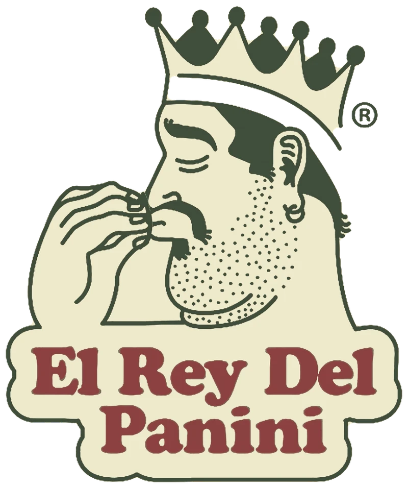
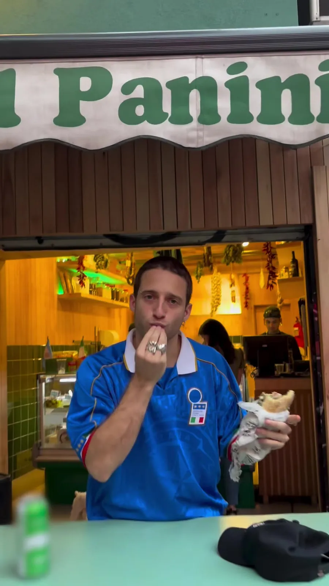
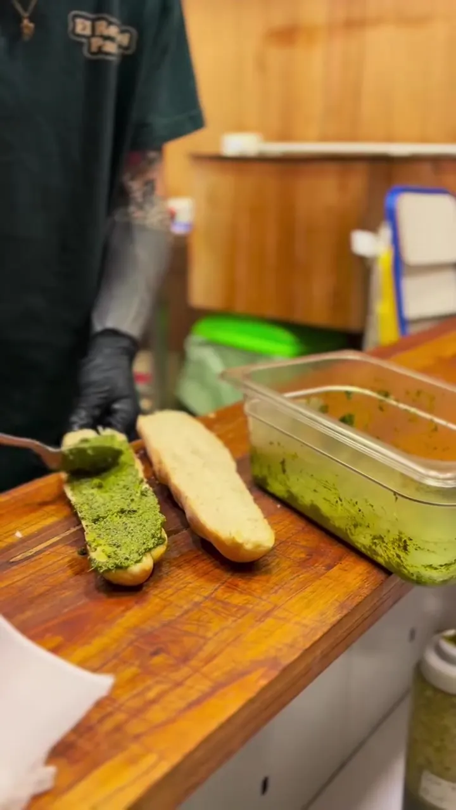
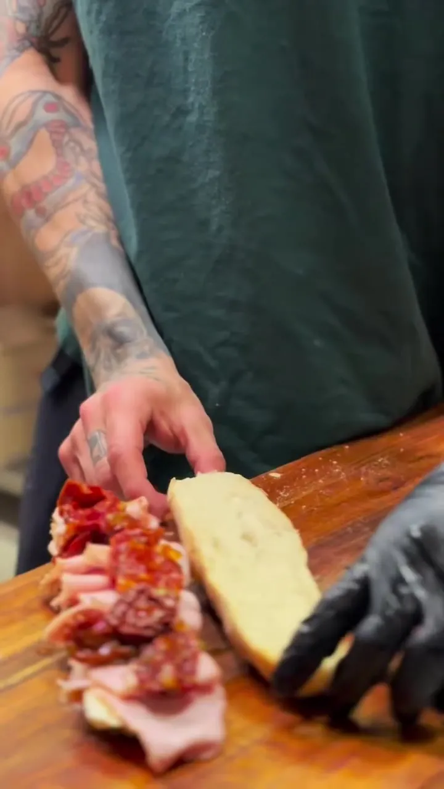
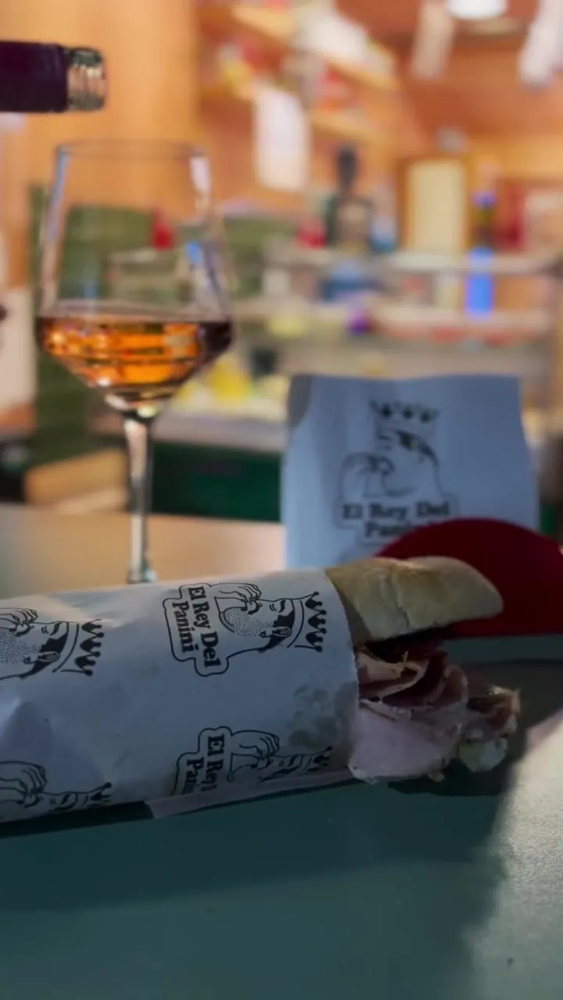
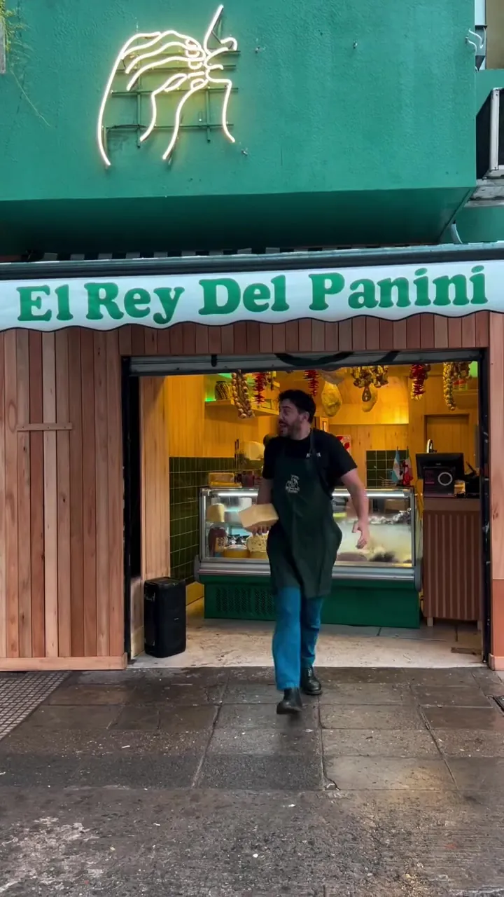

Autentici panini italiani
Viernes y sábados de 20 a 00 h. En La Mala, Av. del Libertador 3883, Arco 4.

El gesto ya lo conocés
Mortadela con pistachos, stracciatella, porchetta, lomo ahumado. Paninis armados en el mostrador, en focaccia o en pan sin TACC.
- Opción sin TACC en paninis
- Pan de focaccia a elección
- Pizzas New York por porción o entera
Así se arma un Clásico
Pasta de pistachos, mortadela con pistachos, stracciatella y oliva, en el mostrador y delante tuyo.



Viernes
y sábados
De 20 a 00 h
La MalaAv. del Libertador 3883, Arco 4
Paseo de La Infanta, Palermo Cómo llegar
